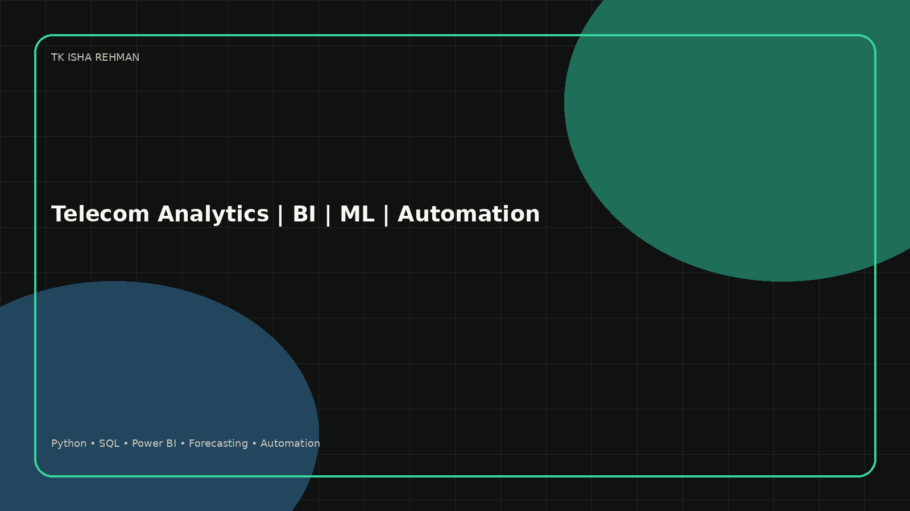

Telecommunication engineering foundation
I bring domain understanding of networks, service quality, operational KPIs, and high-volume service environments.

Telecom analytics | ML | Cloud AI | GenAI
Data Scientist | Telecom Analytics Engineer | BI, ML and Automation
I combine telecommunications engineering, business analysis, BI reporting, forecasting, and automation to turn operational data into decisions that improve revenue visibility, service performance, and executive reporting.
Professional narrative
I am a telecommunications engineer with strong hands-on exposure to business analytics, executive reporting, forecasting, KPI dashboards, Oracle Fusion workflows, procurement controls, and automation.
My portfolio is built around work I can explain in interviews: an air-quality ML engineering project, a predictive-maintenance GitHub project, and professional case studies from budgeting, revenue analytics, operational KPI reporting, Oracle Fusion procurement reporting, stock reconciliation, and GenAI reporting automation.
Capability map
Featured work
Experience frame
I bring domain understanding of networks, service quality, operational KPIs, and high-volume service environments.
I have worked on recurring reporting, budget reviews, KPI dashboards, variance analysis, quality checks, and management packs.
My air-quality forecasting project and predictive-maintenance dashboard show how I connect engineering problems with ML workflows.
I am building practical automation and GenAI use cases around reporting, knowledge retrieval, and analyst productivity.
Attachment ready
My resume summarizes my analytics, BI, automation, and telecommunications experience. The portfolio below adds practical evidence through case studies, project architecture, and implementation notes.